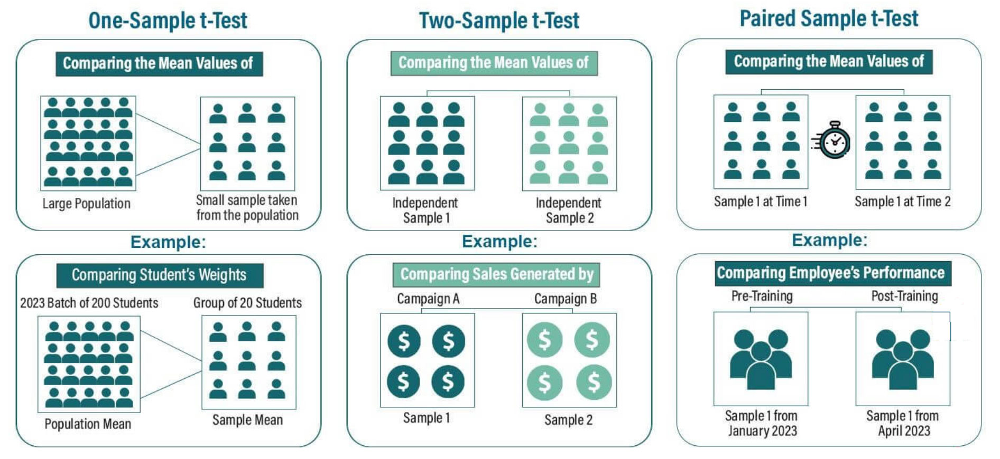
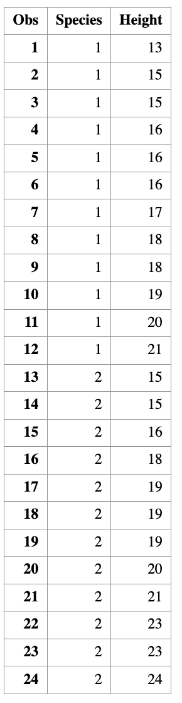
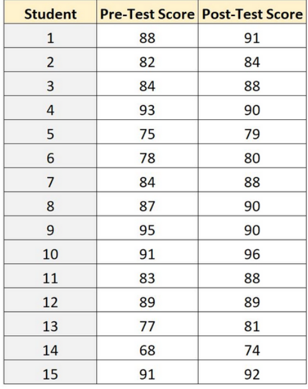
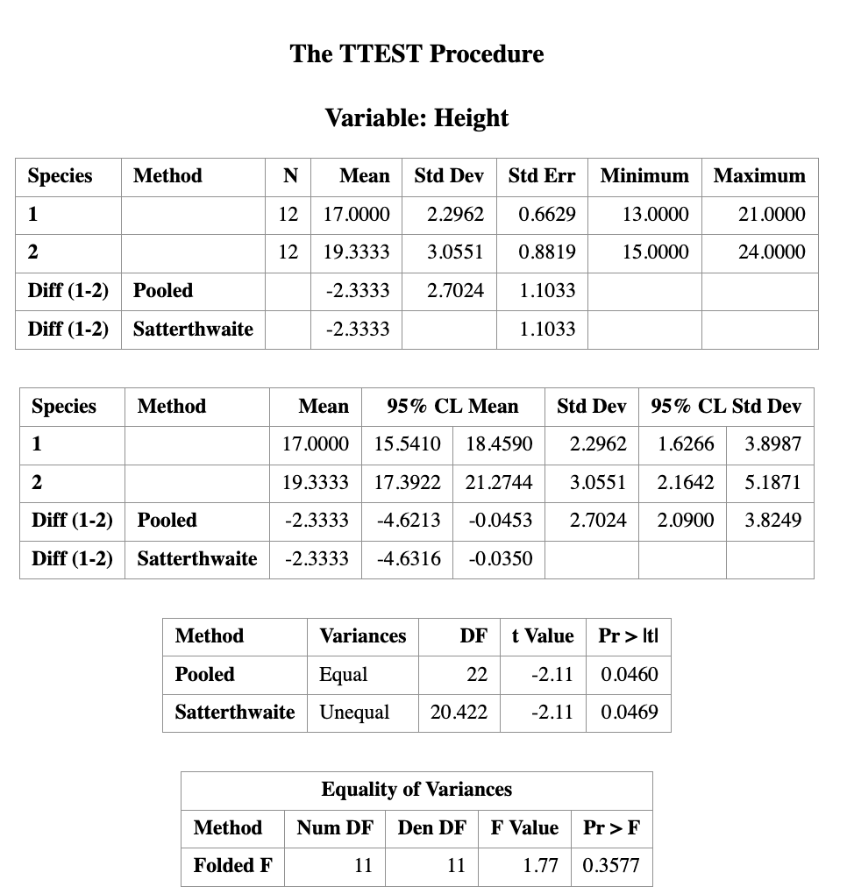
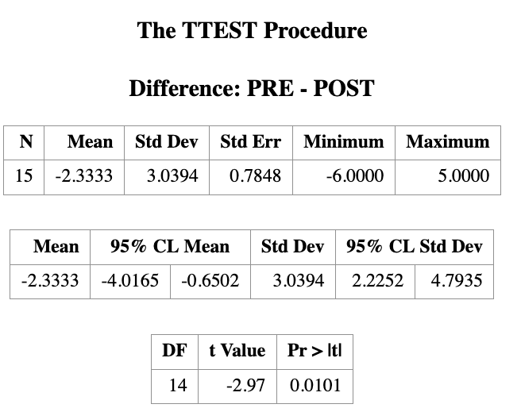

12 Two Sample \(t\)-test for Independent and Paired Data
Learning Objectives
- Distinguish between independent and paired two-sample t-tests.
- Identify the appropriate test based on study design.
- State the model assumptions for each test.
- Perform two-sample t-tests in SAS using
PROC TTEST.- Interpret test statistics, p-values, and confidence intervals.
In many applications, we want to compare two populations, for example:
- Treatment vs control groups
- Male vs female outcomes
- Before vs after an intervention
- Method A vs Method B
The key question is:
Are the population means different?
This leads to two-sample inference.

Since we see that there are different scenarios for the \(t\)-test, we may have another question:
Which \(t\)-test should I use?
The answer depends on the study design. We will discuss two main types of two-sample \(t\)-tests:
- Independent two-sample \(t\)-test: Used when the two samples are independent of each other (e.g., treatment vs control groups).
/*==========================================================
Create the dataset for two-sample t-test example
Variables:
Species : group indicator (1 or 2)
Height : numeric response
==========================================================*/
DATA my_data;
INPUT Species Height;
DATALINES;
1 13
1 15
1 15
1 16
1 16
1 16
1 17
1 18
1 18
1 19
1 20
1 21
2 15
2 15
2 16
2 18
2 19
2 19
2 19
2 20
2 21
2 23
2 23
2 24
;
RUN;
/* Optional: check the data */
PROC PRINT DATA=my_data;
RUN;
- Paired two-sample \(t\)-test: Used when the two samples are related or paired (e.g., before vs after measurements on the same subjects).

12.1 Inference Goals of the Two Sample t-Test
Suppose the two population means are denoted by:
\[\mu_1 \quad \text{and} \quad \mu_2.\]
A two-sample \(t\)-test always begins with the same null hypothesis:
\[ H_0: \mu_1 = \mu_2 .\]
That is, the two population means are equal. The alternatively hypothesis can take different forms.
Alternative Hypotheses
Depending on the scientific question, the alternative hypothesis can take one of three forms.
- Two-sided (two-tailed): \(H_1: \mu_1 \neq \mu_2\)
The two population means are different.
- Left-tailed: \(H_1: \mu_1 < \mu_2\)
Population 1 has a smaller mean than population 2.
- Right-tailed: \(H_1: \mu_1 > \mu_2\)
Population 1 has a larger mean than population 2.
Confidence Interval Interpretation
When constructing a confidence interval, inference is made on the difference of means: \(\mu_1 - \mu_2\).
- If the confidence interval contains 0, we fail to reject \(H_0\).
- If the confidence interval does not contain 0, we reject \(H_0\).
12.2 Sample SAS code
12.2.1 Two Independent Sample \(t\)-test
/*======================================================
Example: Two-Sample t-Test (Independent Samples)
STAT 8678 — Two-Sample t-Test
======================================================*/
/*------------------------------
Create the dataset
------------------------------*/
DATA my_data;
INPUT Species $ Height;
DATALINES;
1 13
1 15
1 15
1 16
1 16
1 16
1 17
1 18
1 18
1 19
1 20
1 21
2 15
2 15
2 16
2 18
2 19
2 19
2 19
2 20
2 21
2 23
2 23
2 24
;
RUN;
/*------------------------------
Two-sample t-test
H0: μ1 − μ2 = 0
Two-sided test, α = 0.05
------------------------------*/
PROC TTEST DATA=my_data
SIDES=2
ALPHA=0.05
H0=0;
CLASS Species;
VAR Height;
RUN;
Note on Two-Sample t-Test Methods in SAS
In PROC TTEST, SAS reports results from two different methods by default:
Method: Pooled
This corresponds to the two-sample equal-variance t-test, which assumes
\[ \sigma_1^2 = \sigma_2^2. \] The test statistic uses a pooled variance estimator.Method: Satterthwaite
This corresponds to the two-sample unequal-variance t-test, also known as the
Welch t-test.
No assumption of equal variances is required, and the degrees of freedom are approximated using the Satterthwaite formula.
Practical guidance:
When the equal-variance assumption is questionable, the Satterthwaite (Welch) test is generally preferred and is the default recommendation in modern practice.
12.2.2 Paired Sample \(t\)-test
/* Create dataset */
DATA test_scores;
INPUT PRE POST;
DATALINES;
88 91
82 84
84 88
93 90
75 79
78 80
84 88
87 90
95 90
91 96
83 88
89 89
77 81
68 74
91 92
;
RUN;
/*view dataset*/
PROC PRINT DATA=test_scores;
/*perform paired samples t-test*/
PROC TTEST DATA=test_scores ALPHA=.05;
PAIRED PRE*POST;
RUN;
12.3 Statistical Assumptions of the Two Sample \(t\)-Test
The validity of a two-sample \(t\)-test relies on the following assumptions:
Continuous data
The response variable is continuous (not discrete or categorical).Normality
The data in each population follow a normal distribution.- In practice, the two-sample t-test is reasonably robust to mild departures from normality, especially for moderate or large sample sizes.
Equal variances (for the pooled t-test)
The population variances of the two groups are equal: \[ \sigma_1^2 = \sigma_2^2. \]- If this assumption is violated, the Welch (Aspin–Welch / Satterthwaite) two-sample t-test should be used instead.
Independence of samples
The two samples are independent of each other.- There is no relationship between individuals in Sample 1 and Sample 2.
- If observations are paired or matched, a paired t-test should be used instead.
Random sampling
Both samples are simple random samples from their respective populations.
Each individual in the population has an equal probability of being selected.
12.4 Other Two-Sample Tests
As discussed in the one-population setting, there are several hypothesis tests related to the two-sample problem beyond the two-sample t-test. The most common ones include:
12.4.1 Two-Proportion Z Test
This test is used to compare two population proportions.
Hypothesis Testing
Let \(p_1\) and \(p_2\) denote the two population proportions.
Null hypothesis \[ H_0: p_1 = p_2 \] (the two population proportions are equal)
Alternative hypotheses
Two-tailed: \[ H_1: p_1 \neq p_2 \] (the two population proportions are not equal)
Left-tailed: \[ H_1: p_1 < p_2 \] (population 1 proportion is less than population 2 proportion)
Right-tailed: \[ H_1: p_1 > p_2 \] (population 1 proportion is greater than population 2 proportion)
Confidence Interval Inference is made on the difference in proportions: \[ p_1 - p_2. \]
12.4.2 Two-Sample Variance F Test
This test is used to compare two population variances.
Hypothesis Testing
Let \(\sigma_1^2\) and \(\sigma_2^2\) denote the two population variances.
Null hypothesis \[ H_0: \sigma_1^2 = \sigma_2^2 \] (the two population variances are equal)
Alternative hypotheses
Two-tailed: \[ H_1: \sigma_1^2 \neq \sigma_2^2 \] (the two population variances are not equal)
Left-tailed: \[ H_1: \sigma_1^2 < \sigma_2^2 \] (population 1 variance is less than population 2 variance)
Right-tailed: \[ H_1: \sigma_1^2 > \sigma_2^2 \] (population 1 variance is greater than population 2 variance)
Confidence Interval Inference is made on the ratio of variances: \[ \frac{\sigma_1^2}{\sigma_2^2}. \]
12.4.3 Summary
| Test | Parameter of Interest | CI Targets |
|---|---|---|
| Two-sample t-test | \(\mu_1 - \mu_2\) | Difference in means |
| Two-proportion Z test | \(p_1 - p_2\) | Difference in proportions |
| Two-sample F test | \(\sigma_1^2 / \sigma_2^2\) | Ratio of variances |